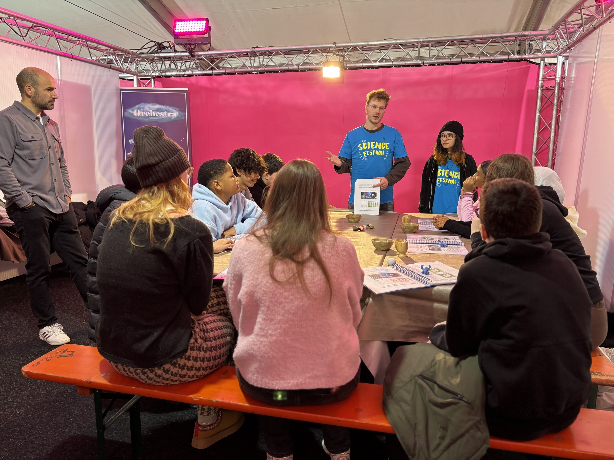
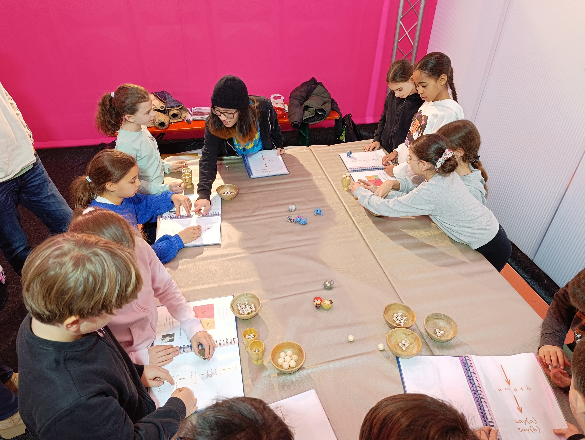
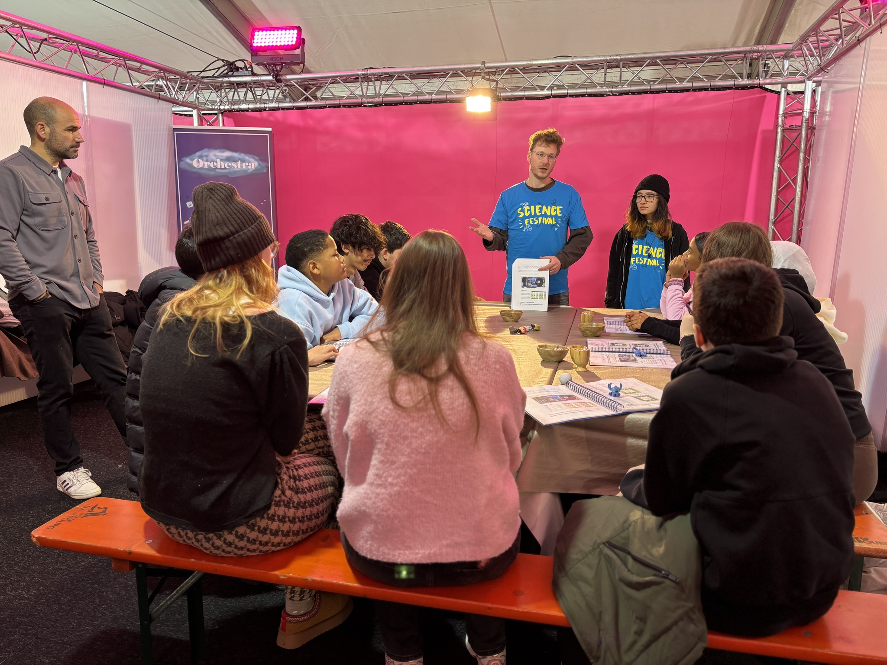
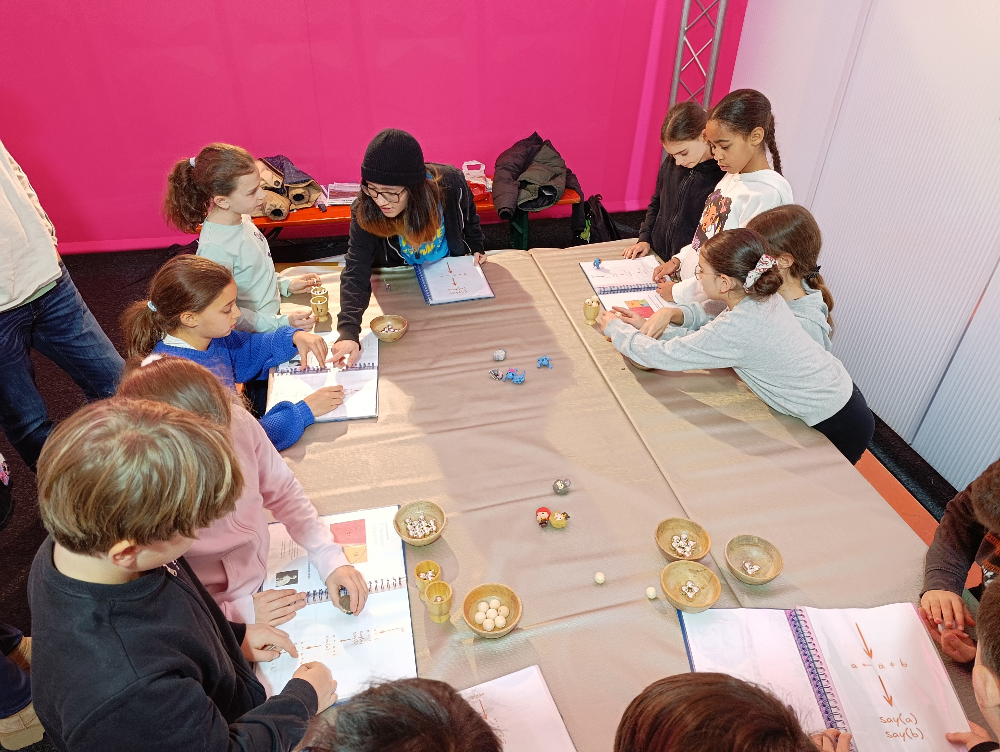

We participated in the Science Festival 2025 with an activity named "Supercomputers: Always Faster?". Our goal was to show some of the challenges in programming (super)computers.
 




Description: Computers are everywhere in our daily lives, powering everything from social media to AI-driven applications. As technology advances, we need more computing power to handle complex tasks, leading to a key challenge: how can we use multiple computers to process tasks more efficiently? While it might seem that doubling the number of computers should double the speed, reality is more complex. Just as teamwork in a large company requires coordination to be effective, parallel computing depends on synchronization to maximize efficiency. This workshop introduces participants to fundamental programming concepts through two interactive activities that make these ideas accessible and engaging. The first activity is a paper-based board game that demystifies programming and illustrates how a single computer processes instructions. Using just pen, paper, and marbles, players step through a program, observing how computers follow a sequence of operations. This activity provides an accessible and interactive way to grasp fundamental programming concepts without the need for a computer. The second activity is a multiplayer video game for two players that highlights teamwork. This challenge makes it clear how coordination impacts performance, giving players an intuitive understanding of how parallel computing works without complicated explanations. Understanding what happens behind the screen helps break down the mystery of technology and builds problem-solving skills. The concepts covered in this workshop, such as logical thinking and problem-solving, also apply beyond programming. This workshop is designed for people with no programming knowledge and offers different levels of difficulty to suit various audiences. It encourages critical thinking, problem-solving, and teamwork in an engaging and accessible way, demonstrating complex computational principles through educational games.
Reusing our materials
Feel free to reuse our materials under the license CC BY-NC-SA, which is ok for anything educational. We would be happy to know if you use it, or if you have questions about it :)
- Coding book (beginner): PDF book and the Powerpoint version if you want to edit it: PPTX book.
- Coding book (advanced): PDF book and the Powerpoint version if you want to edit it: PPTX book.
Team: Pierre Talbot (coding book, organization), Angelica Rings (video game, organization), Yi-Nung Tsao (Saturday animator), Hakan Hasan (Sunday animator), Régis Beck (Monday animator).
Publications on social network: Facebook/FSTM